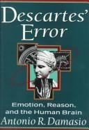

Descartes' Error: Emotion, Reason, and the Human Brain
Book·Antonio Damasio, 1994·笛卡尔的错误

Uses cases of brain damage to show how emotion shapes rational judgment and decision-making.
- Author
- Antonio Damasio
- Year
- 1994
- Difficulty
- Intermediate
- Kind
- Primary text
- Schools
- Affective Neuroscience
- Core theories
- Somatic Marker Hypothesis
Editions
- Chinese edition 《笛卡尔的错误》 [美] 安东尼奥·R.达马西奥 · tr. 毛彩凤 · 教育科学出版社 · 2007 Douban 8.2 (583 ratings) Douban page ↗
- English edition Descartes' Error: Emotion, Reason, and the Human Brain Antonio Damasio · Penguin Books paperback with new preface · 2005 Open Library ↗